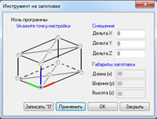
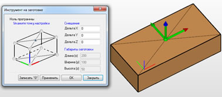

Команда предназначена для задания «0» программы указанием характерных точек на габаритном параллелепипеде заготовки и смещением по трем координатам относительно указанной точки.

Команда вызывает диалог и устанавливает инструмент в точку настройки с учетом смещения, которые заданы в диалоге. Специальный значок СК, дублирует это положение инструмента.

Ноль программы – задать положение СК относительно габаритного параллелепипеда заготовки
Записать «0» - вызвать диалог для записи текущего положения инструмента в одну из стандартных СК (G54-G59). Если этого не сделать, то ноль программы останется таким, каким он был до выполнения команды «Инструмент на заготовке».
Применить – учесть изменения величины смещений и показать в графическом окне инструмент и значок СК в «0» программы.
Закрыть – закрыть диалог.